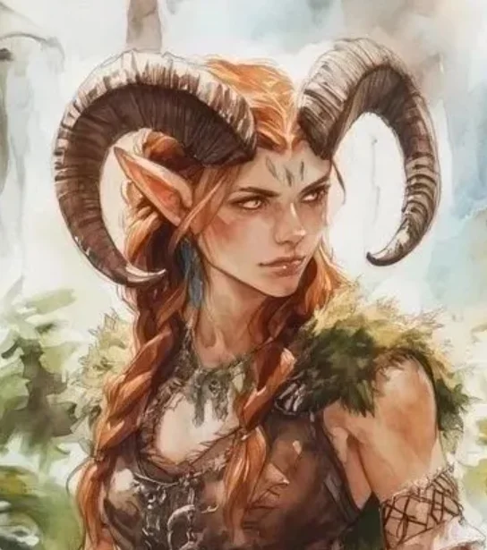
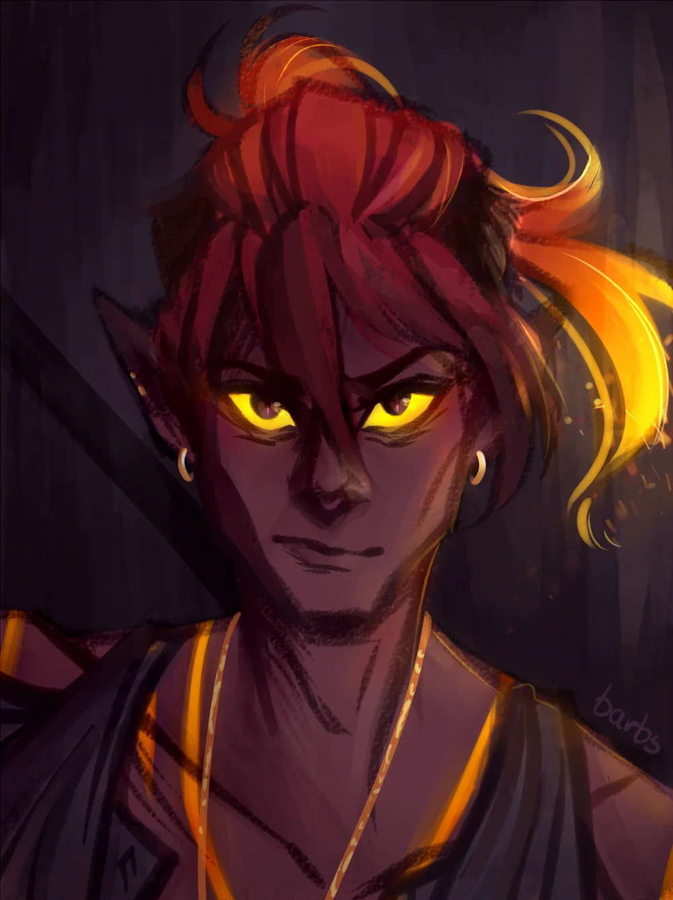
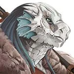
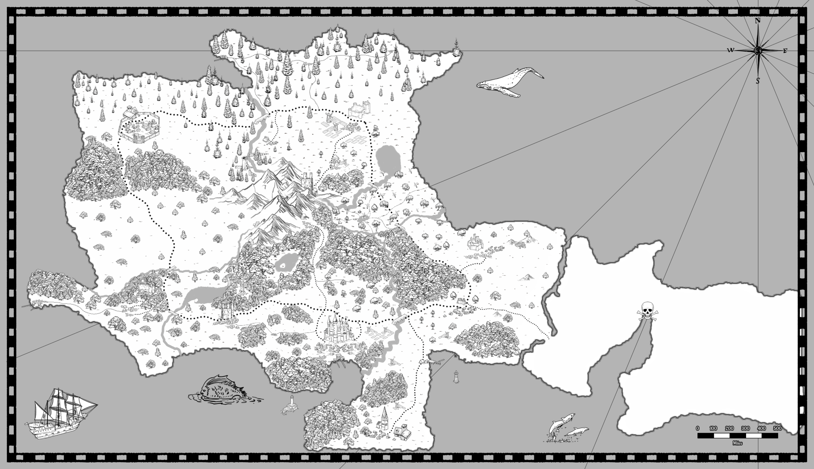
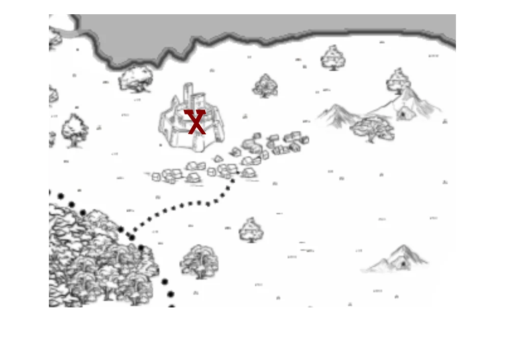

Das Versiegeln der Tore:
Rinaboths letzte Hoffnung
In den Hallen von Draken sammeln wir unsere Kräfte.
50 Klingen und drei Helden gegen die Flut der Flammensalamander.
Das Portal muss fallen, bevor Rinaboth zu Asche wird.
Die Helden von Rinaboth

Avra
Ich bin Avra, eine Hüterin des Dark Willow Woods und Bardin der schwebenden Pfade...

Lahar
Ich bin Lahar, ein Dieb aus den Schatten der Stadt, der sich den flammenden Hügeln anschließt...

Acnologika
Ich bin Acnologika, ein Drachengeborener, der sich den Toren anschließt, um Rinaboth zu retten...
Die Welt von Rinaboth

Einst war Rinaboth ein Reich der Harmonie, dessen Name die Einheit von Mensch (Rina – Fluss) und Zwerg (Both – Stein) besiegelte. Doch vor 250 Jahren versiegte die königliche Blutlinie in einer Tragödie, die das Land in achtzig Jahre blutiger Erbfolgekriege stürzte. Die Ära der Sieben Lords Seit 120 Jahren herrscht ein brüchiger Frieden. Sieben Lords teilen das Land unter sich auf. Während an der Oberfläche Turniere und "Gentleman-Duelle" das Volk unterhalten, tobt im Schatten ein unerbittlicher Kampf um Steuern, Macht und Territorium. Das Schicksal der einfachen Leute Für die Bewohner von Rinaboth sind politische Wechsel Alltag geworden. Man wettet auf den nächsten Lord, während man die Last der Steuern trägt. Doch nun droht eine Gefahr, die kein politisches Ränkespiel lösen kann: Die flammenden Hügel beben, und die "Flüsse aus Stein" fordern ihren Tribut.
Die sieben Städte und deren Lords
- West Farthing – Lord Earnest Hellingway – „Das goldene Herz des Westmeeres“
- King's Rest – Lord Henry Altsworth – „König Heinrich“
- Greenrun – Lord Tanner von Blackshire
- Highfield – Acnologika
- Southchapel – Erzbischof Seaward Goodwill
- Flaming Hills – Lord Ghrakun Donnerspeer
- Letzte Bastion – Oberkommandantin Coldara Bludmore
Die Geschichte von Rinaboth
Vor 250 Jahren: Das Ende der königlichen Blutlinie – Ein tragischer Unfall führt zum Tod des letzten Königs und seiner Erbin, was die Dynastie auslöscht und das Land in Chaos stürzt. 250–170 Jahre zuvor: Die Erbfolgekriege – Ohne legitimen Thronfolger kämpfen rivalisierende Adelsfamilien um die Macht, was zu achtzig Jahren blutiger Konflikte führt. 170–120 Jahre zuvor: Die Ära der Sieben Lords – Sieben mächtige Lords teilen Rinaboth unter sich auf, etablieren ein fragiles Gleichgewicht und führen das Land in eine Zeit relativen Friedens. 120 Jahre zuvor: Aufstieg der Flammensalamander – Die flammenden Hügel erwachen zum Leben, und die "Flüsse aus Stein" beginnen, Opfer zu fordern, was die Bevölkerung in Angst und Schrecken versetzt. Gegenwart: Das Versiegeln der Tore – Drei Helden sammeln sich in den Hallen von Draken, um die Tore zu den flammenden Hügeln zu versiegeln und Rinaboth vor der drohenden Zerstörung zu retten.
Die wichtigsten Ereignisse in Rinaboths Geschichte
-
Das Ende der königlichen Blutlinie
-
Kampf der rivalisierenden Königreiche
-
Die Ära der sieben Lords
-
Aufstieg der Flammensalamander
-
Das Versiegeln des Portals
